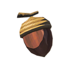
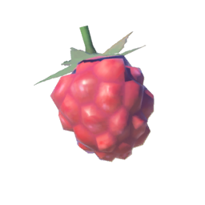
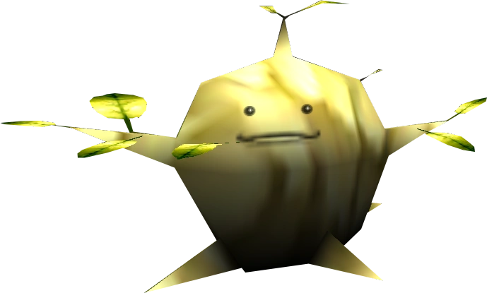
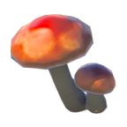
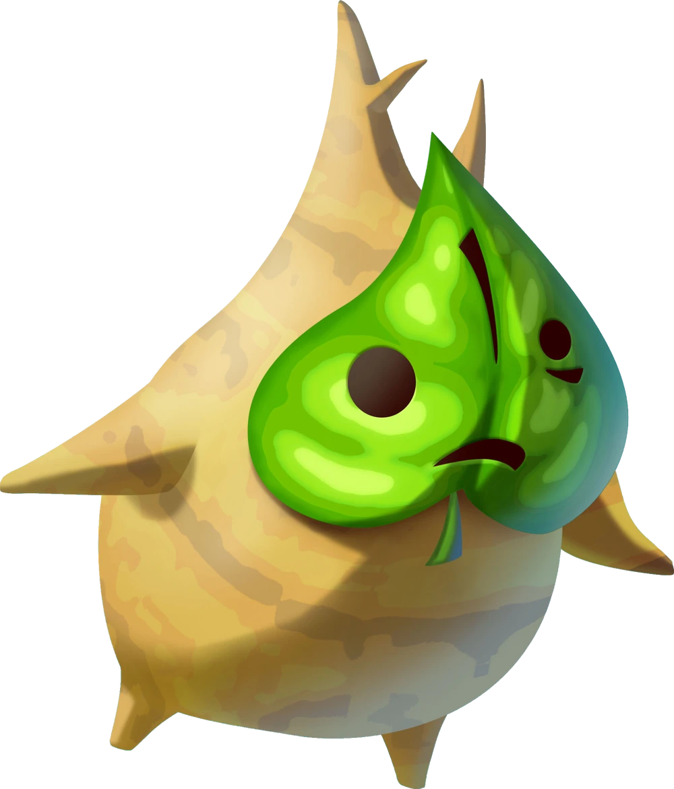

L'écureuil est principalement un herbivore, bien qu'il puisse parfois se nourrir d'insectes ou de petits invertébrés. Sa nourriture principale se compose de noix, de graines, de fruits, de bourgeons et de champignons. Voici un aperçu plus détaillé de son alimentation :

Noix et graines : L'écureuil est particulièrement friand de noix comme les noisettes, les noix de chêne, les noix de pin, et les amandes. Ces aliments sont riches en graisses et en protéines, ce qui est essentiel pour sa survie, notamment pendant l'hiver. Les écureuils utilisent leur habileté à ronger pour ouvrir les coquilles et accéder à l'intérieur.
Fruits : Ils consomment également une variété de fruits, y compris des pommes, des poires, des baies, et des fruits de certains arbres comme les cerisiers ou les pruniers. Ils recherchent principalement les fruits tombés au sol, mais n'hésitent pas à grimper aux arbres pour cueillir des fruits frais.


Bourgeons et écorce : L'écureuil mange aussi des bourgeons d'arbres, en particulier au printemps, ainsi que l'écorce tendre de certains arbres. Cela lui permet de se nourrir quand d'autres sources de nourriture sont rares.
Champignons : Bien qu'ils ne soient pas la nourriture principale de l'écureuil, certains champignons font partie de son régime alimentaire, surtout lorsqu'ils sont frais et faciles à atteindre.


Cache de nourriture : Pour survivre pendant les périodes plus difficiles, comme l'hiver, l'écureuil est connu pour cacher de la nourriture. Il peut enterrer des noix et des graines sous terre ou les cacher dans des fissures d'arbres. Cela lui permet de retrouver sa nourriture quand les ressources naturelles sont moins abondantes.
En somme, l'écureuil est un animal opportuniste qui mange une grande variété d'aliments végétaux et sait s'adapter aux saisons et à son environnement pour se nourrir efficacement.